1 Dept. of Electrical and Systems Eng., Univ. of Pennsylvania
2 Tel Aviv Sourasky Medical Center 3 Gray Faculty of Medical and Health Sciences, Tel Aviv University
4 Rappaport Faculty of Medicine, Technion - Israel Institute of Technology 5 Dept. of Physics, Univ. of Pennsylvania
6 Santa Fe Institute
7 Rudolf Peierls Centre for Theoretical Physics, University of Oxford
Suppose you are asked to meet a friend at the café with the red awning. The awning tells you which café they mean. To get there, you still have to recall where it is, work out how to reach it from here, and anticipate what you might see along the way. A cue can identify a destination without telling you the direction of a single step.
Place cells in the hippocampus and grid cells in the medial entorhinal cortex offer two ways of representing the same location. A place cell fires in a localized region and can change its response when the context changes. A grid cell fires at many locations arranged on a triangular lattice. As an animal moves, a population of grid cells can update its activity by integrating the animal’s motion [1].
How do these interacting systems support not only spatial encoding but also internally driven path planning, such as navigating to locations recalled from cues and reconstructing memory along the planned routes?
Grid cells
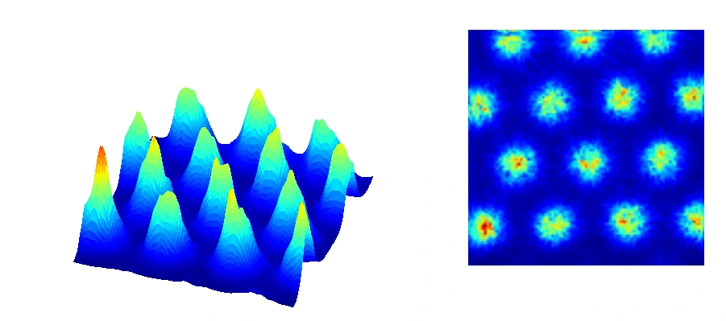
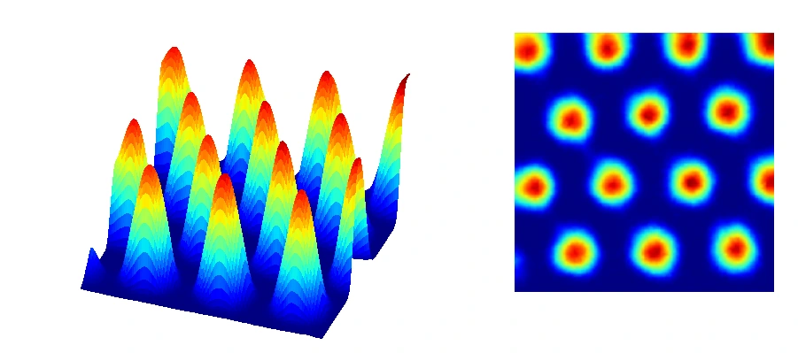
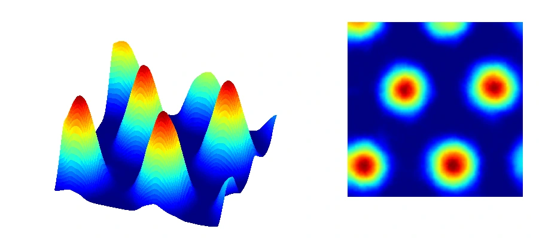
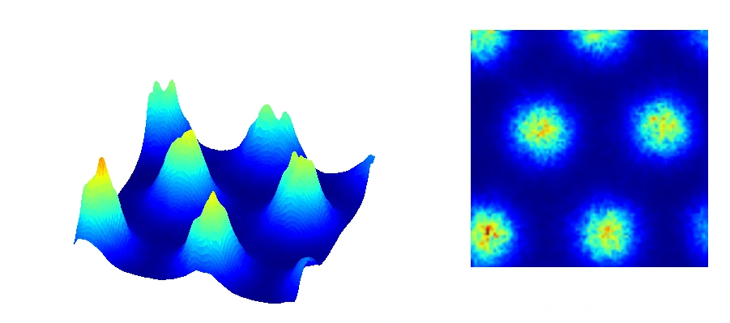
Place cells
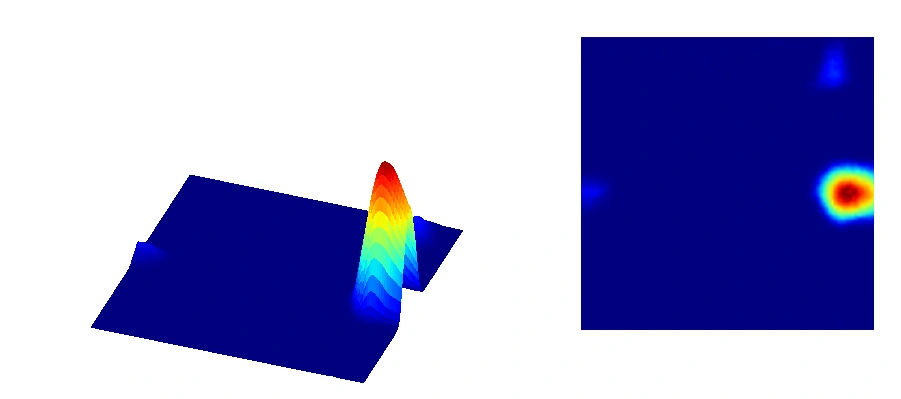
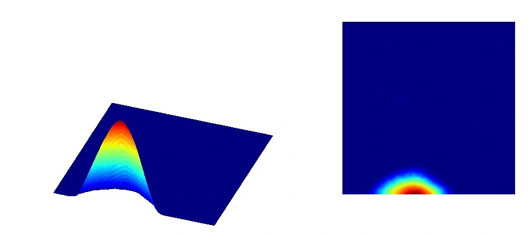
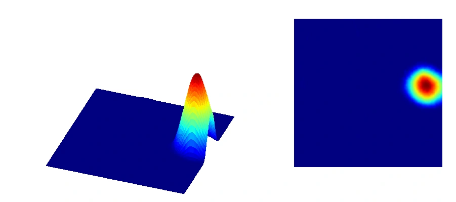
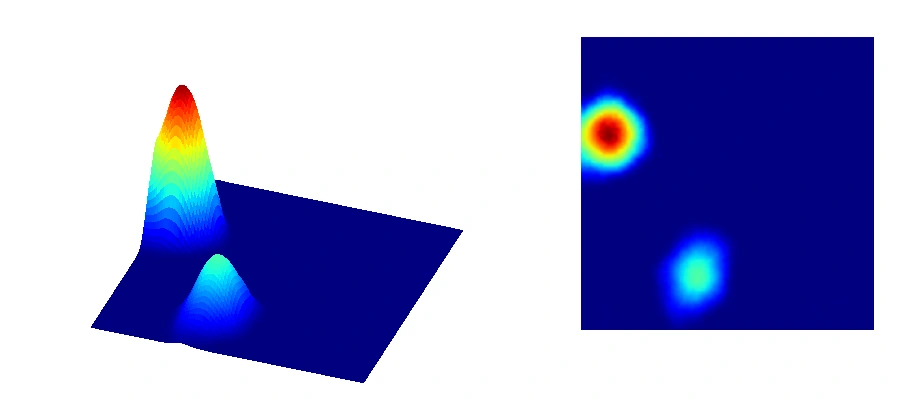
Each pair shows one REMI cell. Surface height represents the relative activity shown in the adjacent firing map.
Learning what a place looks like and where it is
During exploration, sensory and movement signals reach the circuit together. Each time an animal visits the café, the view of the awning accompanies a particular grid population pattern. We propose that hippocampal neurons can associate these two patterns. The association can then be used in either direction. Part of the view could recover the grid pattern for the café; activating that grid pattern internally could recover the view.
We test this idea in a recurrent network that models the loop between the hippocampus and medial entorhinal cortex. During simulated exploration, one group of units learns to reconstruct sensory observations from noisy, partially masked inputs. A second group learns grid responses from speed and head direction. The hippocampal units receive information through recurrent connections. We supervise the grid responses during training, while localized place fields emerge in the hippocampal population without place-field targets.
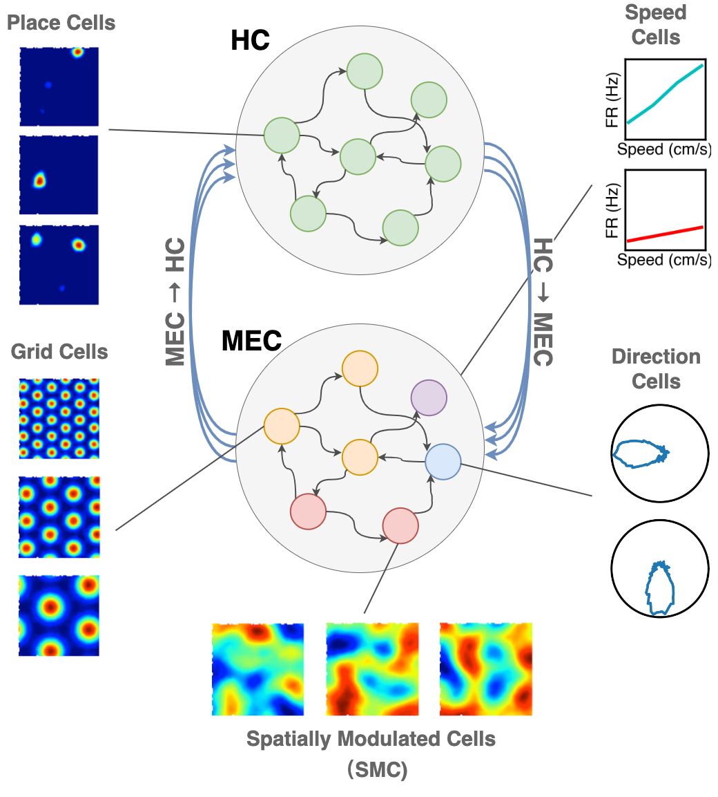
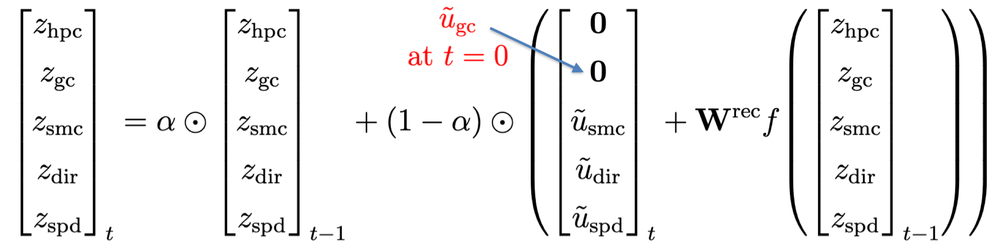
The HC–MEC circuit, its recurrent update, and the training objective for the spatial populations.
Can a sensory cue recover a distant location?
A network that tracks an animal accurately during exploration could simply carry its estimate of position forward from one step to the next. To test recall itself, we clear the network’s hidden state and present a fixed sensory cue from a known location. Only the sensory population receives the cue. The grid population has to recover the corresponding activity pattern through the circuit.
The query supplies sensory activity associated with the target location.
For each population, we compare its activity with responses recorded when the agent explored the arena. The closest match gives a location estimate at each time step. Over a five-second query, activity converges near the target pattern. The green point in the figure marks that target in population activity space. The accompanying map shows where those successive activity patterns would place the animal in the room.
Recall viewed in population activity space (left) and decoded into arena coordinates (right).
Varying the amount of masking during training reveals a trade-off. Stronger masking produces more hippocampal units that meet our place-cell criterion and improves location decoding, even as the network becomes less accurate at reconstructing the sensory observation itself. Remembering where an observation belongs and recovering its sensory detail can therefore differ in accuracy within the same network.
Planning a path from the current grid state to the goal
Once a destination has a grid representation, what movement would bring the current pattern closer to it? Within a grid module, moving a given distance in a given direction shifts the population pattern in a similar way at different starting points. A movement learned in one part of the arena can therefore be useful elsewhere. Periodicity also creates an ambiguity: one module can repeat its pattern at several locations. Modules with different grid spacings help distinguish these possibilities.
How can a module plan a sequence of steps? During exploration, nearby grid phases follow one another as the animal moves. In a simple model, we record these local transitions in a matrix. We then mark the current and target phases and repeatedly apply the matrix, spreading activity to neighboring phases. The strongest response settles between the two endpoints. Selecting the strongest phase at each step and renormalizing the activity produces a sequence that approaches the target.
Figure 3. Planning with grid-cell phases. (a) The blue and red points mark the current and target phases on the torus of a single grid module. (b) Unwrapping the torus exposes periodic copies of the target. The blue arrow selects the copy within half a period of the current phase along each axis. (c) Each column shows the weight of each phase at one iteration. As weight spreads to neighboring phases, the maximum (red dot) settles between start and target. (d) Selecting the strongest phase and renormalizing at each step moves the peak to the target. (e) Four snapshots show the same update in two dimensions, with brighter colors indicating greater weight.
To test planning separately from recall accuracy, we give a planner the target grid pattern directly. It also receives the current grid state, and can influence the navigation circuit through its speed and head-direction units. These internally generated movements update the grid pattern one step at a time. We decode the resulting sequence to see which route the planner chose.
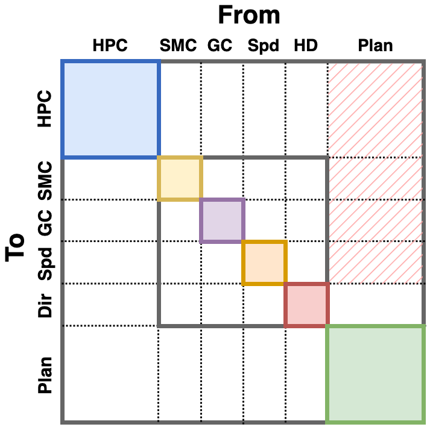
Connectivity of the navigation circuit before and after the planning population is added.
During training, start and goal locations are sampled from one-second walks. The planner receives the endpoints, and the intervening walk is withheld. At test time we choose endpoints from ten- and twenty-second walks. The decoded paths can connect these more distant locations and take shortcuts across bends in the original walk. This is a test of generalizing local movement updates in an open arena. Planning a detour around a wall would require an additional mechanism for representing boundaries.
Reconstructing the experience along a planned route
Planning supplies a second test of the association learned during exploration. At each intermediate step the grid population represents a new location. If that grid pattern reinstates a corresponding sensory memory, the sensory population should trace the same route, even though the planner has no direct connection to it.
We initialize the sensory and grid states at the starting location and let the planner act through the movement units. We then decode position independently from the grid population and the sensory population. Their paths closely follow one another. Agreement at the intermediate locations matters here: recovering the final sensory cue alone would tell us little about what the network recalled along the way.
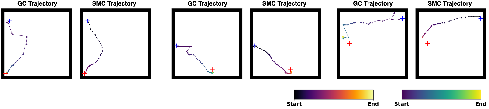
Positions decoded independently from grid and sensory activity during internally generated planning.
What would the agent see along the way?
In the simulated arena, we can tell whether a recovered sensory vector belongs to the right location. In a rendered room we can ask a more concrete question. As a planned path passes a doorway, does the recovered view show the doorway from the expected part of the room?
We collect panoramic images at a fixed viewing orientation in Habitat-Sim. A modified masked autoencoder, BtnkMAE, encodes each panorama in a 1,024-dimensional vector from which its decoder can reconstruct an image. We pretrain it on ImageNet-1k, fine-tune it on the navigation scenes, and freeze it. The location-specific vectors then take the place of the simulated sensory responses during training.
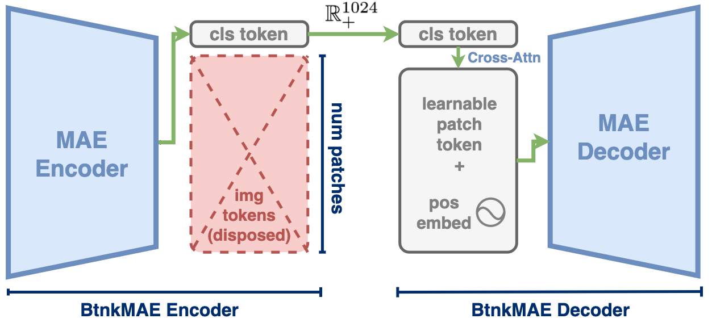
Spatial responses of visual features and the encoder–decoder used to reconstruct panoramas.
During planning, we pass the intermediate sensory states through the frozen decoder. The reconstructed views resemble the panoramas at corresponding points along the planned route. The two examples below show what is recovered from the network’s own activity as its internal position changes.
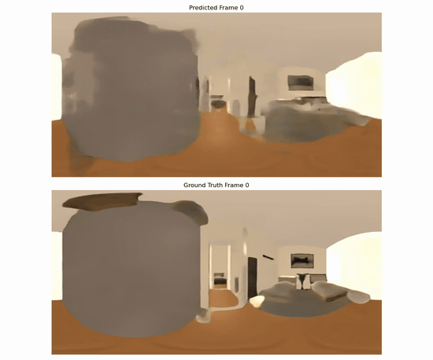
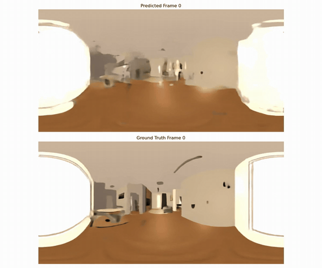
Two planned routes in Habitat-Sim with their visual reconstructions.
What the circuit predicts
The two directions of recall suggest different experimental tests. A familiar sensory cue presented away from its usual location should reactivate a grid pattern associated with that location. During subsequent planning, entorhinal activity should sweep through positions ahead of the animal, accompanied by reinstatement of the sensory patterns associated with those positions. Recording these populations together would distinguish recall of the destination from recall of the route.
The model assumes grid scales suited to the size of the arena and uses supervision to establish the grid code. How those fields emerge is a separate question that we investigate in our work on the co-emergence of grid and place fields. The full REMI paper gives the analytical displacement model, training procedures, and additional tests with noisy and distorted grid representations [2].
Acknowledgments and funding
This work was supported by NIH CRCNS grant 1R01MH125544-01 and partially by the NSF and DoD OUSD (R&E) under Agreement PHY-2229929 (The NSF AI Institute for Artificial and Natural Intelligence).
Additional support came from the United States-Israel Binational Science Foundation (BSF).
PC was supported by the National Science Foundation (IIS-2145164, CCF-2212519) and the Office of Naval Research (N00014-22-1-2255).
Vijay Balasubramanian was supported in part by the Eastman Professorship at Balliol College, Oxford.
Cite this Paper
{% include project-citation.html %}
References
Edvard I. Moser, Emilio Kropff, and May-Britt Moser. Place cells, grid cells, and the brain’s spatial representation system. Annual Review of Neuroscience, 31:69–89, 2008. doi: 10.1146/annurev.neuro.31.061307.090723.
Zhaoze Wang, Genela Morris, Dori Derdikman, Pratik Chaudhari, and Vijay Balasubramanian. REMI: Reconstructing Episodic Memory During Internally Driven Path Planning. NeurIPS, 2025. Full paper and supplementary material.